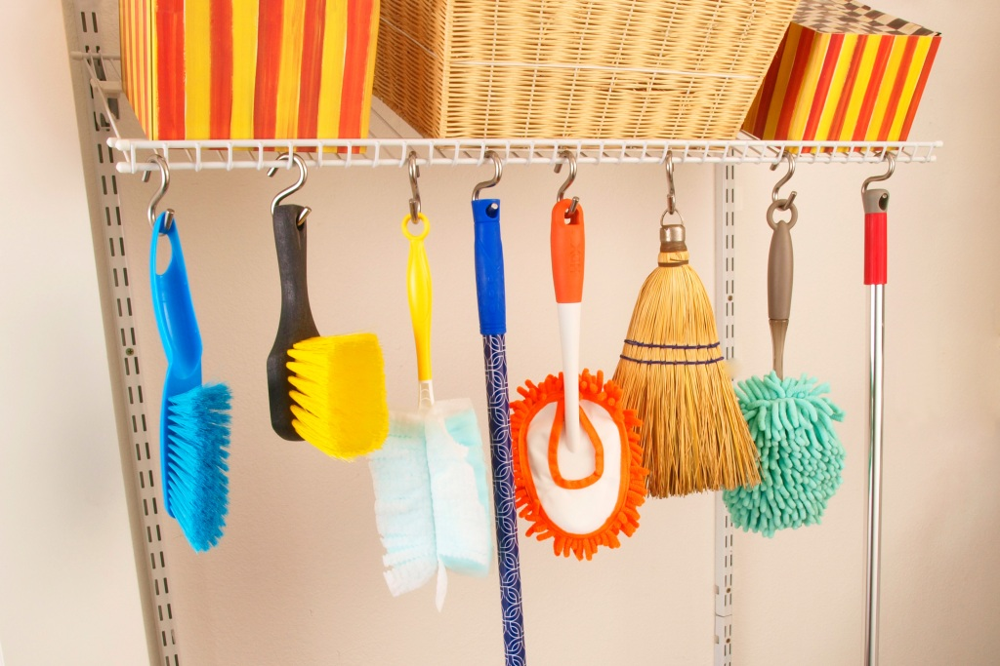

| Home | Product Details | Patent Page | Problems Encountered | Solutions | Phases Page | Users Acceptable Page | About the Founder |
The Parcel and the Costumer
Online Shopping is the trend in our society where people lessen the risk of getting
the virus from face to face shopping. There are different online shopping apps
and buying products online is less hassle, safe from people interaction,
convenient and easy to access with the use of our mobile gadgets. How can we be sure
if the parcel that we bought online is safe. are we assured that we are safe when
when it comes to the interaction between the rider and the customer?

Objects that would be used and shared at home
Objects and other materials like tools and cleaning materials can be shared at home.
there's a risk of transmitting the virus because of touch, there's a risk of not only
one member of the family but the other also.